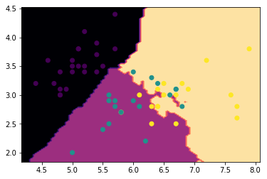

Projects and Research
Clustering the Iris dataset
The iris dataset is well known and consists of the widths and lengths of the petals of many flowers in the iris family. Displayed here is a plot of the widths and lengths of many of these flowers, clustered using the K-nearest neighbors clustering method. We can see that there are three types of iris flowers, with type delineated by the boundaries of when the color changes. This boundary is called a decision boundary.
911 Calls in Baltimore
The 911 Police Calls for Service dataset is available on Baltimore's open data page and consists of millions of 911 calls. Data included are call reason, neighborhood, and latitude / longitude coordinates. The following is a map of Baltimore neighborhoods, colored in by calls flagged for "Common Assault".
Many reasons for calls are listed, but among the top reasons listed, in addition to "Common Assault", are Burglary and Larceny. These are examples of crimes, while serious, are not as bad as say, a homicide.
Another interesting call reason among the top is "Suspicious Person". I thought it would be interesting to overlay calls for the above three crimes, and calls for suspicious person. Essentially, among those neighborhoods where crimes are reported, which of these neighborhoods tend to produce calls to the police *before* a crime has happened? The result is the following plot, which shows: among the top 20 neighborhoods by total calls for Assault, Burglary, or Larceny, which have a high ratio of calls for suspicious person to total calls for crimes? In deep red are neighborhoods which have a lot of calls for crimes, but not a lot of calls for a suspicious person. In deep blue are neighborhoods which have a lot of calls for suspicious person, relative to how many calls for crimes they have. Essentially, the blue neighborhoods are a lot more paranoid than the red neighborhoods.